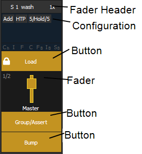
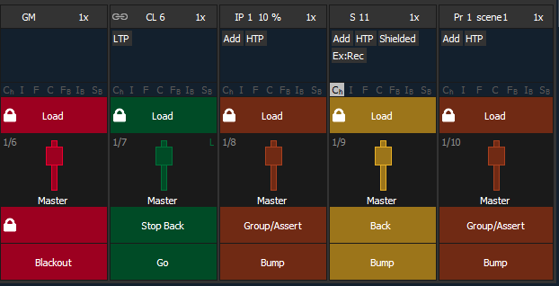
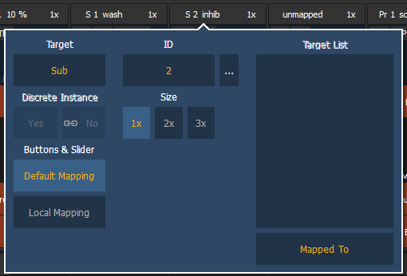

The fader configuration display is found on Tab 36 .The Fader List , which shows all of the faders and their assignments, can be found in Tab 35.
At the top of the fader configuration display, you can select the fader page, which has 100 pages of 10 faders each page.
You can configure the master fader pair at the top of the display. See Master Fader Configuration for more information.
The fader configuration display shows a virtual mockup of each fader and its buttons. The various parts of the virtual fader can be clicked or tapped to open configuration options.

Each fader is color coded based on its assigned target type. Grandmasters and inhibitive submasters are in red, additive submasters are yellow ,playback faders display in green ,and presets, palettes, global effects, and manual time masters are brown.

Click on the fader header to open the fader configuration window.

This setting allows you to map a cue list, submaster, intensity, focus, color, or beam palette, preset, global effect fader, manual time master, or grandmaster to a fader.
This sets the number of the target assigned to the fader, such as Cue List 2 or Submaster 5. For a list of available Target IDs, click or press the {...} button beside ID.
Note: Content can also be loaded to faders from Live, using the command line and load.
This setting defaults to Yes and applies to cue lists. When a fader is discrete, it will track other faders that are running the same cue list, BUT if a fader that it is tracking manually changes to a different cue list, a discrete enabled fader will not change its content. When set to No (or disabled), once a fader is in sync with another fader running the same cue list, it will stay in sync when content is changed. Discrete disabled is noted in the fader ribbon with a link icon.
A fader can be mapped so its content takes up 1, 2, or 3 faders. 1x will take up 1 fader, 2x will use 2 faders, and 3x will use three.
Note: If a fader is mapped to 1x, the top button will be locked as a load button. When mapped to 2x or 3x, the top left button will be locked as a load button.
When set to Default Mapping, the button and fader configuration is drawn initially from the cue list or submaster list properties for that content. If changes are made to that mapping in Tab 36, it filters BACK to the cue or submaster list and changes any other instances where that content is mapped. If set to Local, any changes made in Tab 36 impact only that instance of the content. See Cue List Properties and Submaster Properties for more information on default mapping.
If temporary fader mapping is being used, the list of content will display here. See Temporary Fader Mapping for more information.
Clicking on the configuration box will open additional configuration options that are dependent on the target type assigned to the fader.
For detailed information on these various options, please see the following topics: